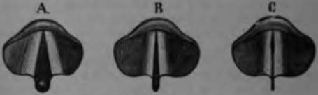

Singing
Description
This section is from the book "Wonders Of The Human Body", by Auguste Le Pileur. Also available from Amazon: Wonders of the Human Body.
Singing
We generally recognize two series of sounds in the voice in singing, one comprising the grave and semi-acute notes, and the other the high notes; this is called the register of the voice, one is the chest register or voice, and the other the head register or voice, or falsetto. Some writers admit a third series or mixed voice, which resembles a diminutive chest-voice, in quality and in the disposition of the glottis when it is produced.
We have indicated already the principal physiological theories on the formation of the voice in general: there is no less diversity in opinion in regard to the falsetto. According to Muller, it results from the vibrations of the edge only of the vocal cords; other authors incline to the notion that the glottis no longer vibrates like a reed, but like the mouthpiece of a flute. M. Segond makes the falsetto voice to come from the superior glottis exclusively, that is to say, from the vibration of the superior thyro-arytenoid ligaments. This opinion has been refuted by the experiments of M. Longet And lastly, Weber and Longet attribute the origin of the falsetto notes to the harmonics of the vocal cords.
The laryngoscope enables us to study the glottis during the emission of the chest-notes, and even of the falsetto notes, but observers are not agreed upon the phenomena which they have observed.
According to Fournie, the chest, the falsetto, and the mixed voice, are all produced by the vibration of the mucous fold which covers the free border of the vocal cords.
Fig. 45. The glottis and vocal cords.
A, B. Glottis in the chest-voice. C Glottis in the falsetto voice.
In the chest-voice the larynx descends very low and the vocal cords are horizontal and stretched simultaneously in length and thickness; the superior thyro-arytenoid ligaments project, and partly hide the external border of the vocal cords; the epiglottis is slightly inclined over the opening of the larynx; the transverse diameter of the glottis is very small and linear, and the edges of the vocal cords are very thick and rigid. The larynx rises in proportion as the tone grows higher, the epiglottis straightens again little by little; the plane of the vocal cords inclines; the orifice of the glottis shuts progressively from behind forward, and consequently the vibrating portions diminish in length, while at the same time the tension increases.
In the falsetto, the larynx is carried upward and backward against the spinal column, the soft palate rises, and its posterior pillars approach each other, the ventricles of the larynx are obliterated, the vocal cords are wholly visible, and their borders are in contact for half their length at least The glottis is therefore closed behind, and its orifice, very much smaller than it was during the utterance of the chest-notes, diminishes progressively as the notes grow higher.
In the mixed voice the glottis is open throughout its whole length, and its transverse diameter is greater than for the other registers.
According to M. Battaille, in the chest-voice the cords vibrate throughout their extent, the opening of the glottis is rectilinear, there is less tension in the walls of the vestibule and glottis, and on the contrary more in the vocal cords, than in the falsetto voice. In the falsetto voice, the arytenoid cartilages embrace each other by a sort of reversion in the two upper thirds of their internal surface, the glottis then being ellipsoid in form and more open behind than in the chest-voice.
This form of the glottis, which is attributed by the eminent artist to the falsetto voice, is precisely the same that M. Fournie has seen in the mixed voice, which requires less effort.
M. Battaille is the only author who notes the joining of the arytenoid cartilages by their internal surface: others admit that they approach each other at their borders only so as to close the hollow which separates them behind, and to cause the vocal cords simultaneously to face each other through part of their length.
M. Mandl has kindly communicated to us the result of his numerous observations on this subject; according to his opinion, in producing the chest-voice the arytenoid cartilages are separated behind; in the falsetto, in a normal condition, they approach and join each other on their posterior border, which causes the vocal cords to face each other—as M. Fournie" also says—behind, while they remain separated in front by the slit of the glottis, which has become elliptic and much shorter; in certain persons, however, we observe something analogous to the joining of the arytenoid cartilages which M. Battaille describes, and which belongs to the normal condition of the larynx. In fact, when one of these cartilages is anchylosed at its point of union with the cricoid, and does not move to meet its congener, the latter supplies the defect and covers it by a sort of overlapping.
Continue to:
- prev: Mechanism Of Articulate Sounds
- Table of Contents
- next: Timbres (The Distinctive Quality Of Voices)